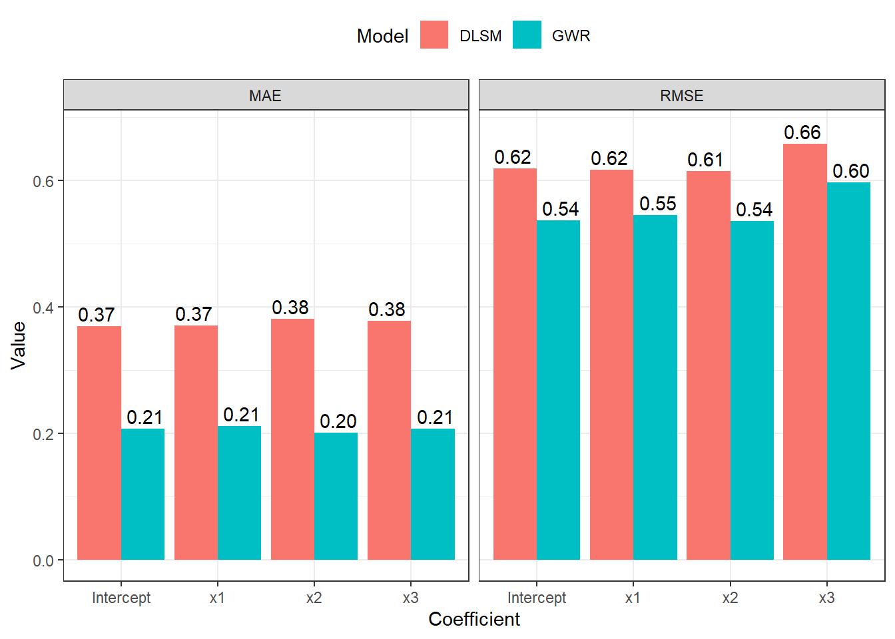
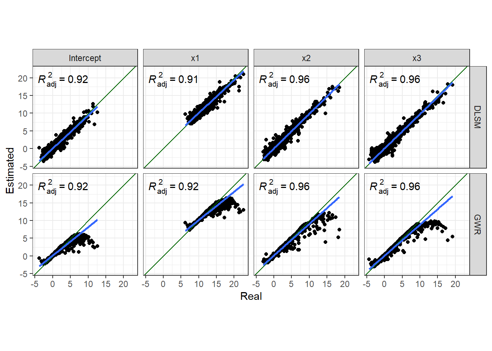

library(GWmodel)
library(tidyverse)
library(ggpubr)
library(ggpmisc)
library(sf)
library(Metrics)
library(reshape2)In this document, I’m going to show codes of simulation experiments and their results demonstrated in the short paper Introducing a General Framework for Locally Weighted Spatial Modelling Based on Density Regression. This paper mainly talks about a density-based local spatial modelling (DLSM) method, which was originally named as “geographically weighted density regression (GWDR)”. In the following parts, we don’t distinguish these two terms.
In addition to show reproducable code of experiments shown in the paper, We are going to describe a bit how to install and use this model.
Installation
The R implementation of GWDR is in the unpublished feature-gctwr branch of package GWmodel. To use it, please clone this repositry, switch to this branch, and install this package manually.
git clone https://github.com/GWmodel-Lab/GWmodel2.git GWmodel
cd GWmodel
git switch feature-gctwr
R CMD INSTALL GWmodel
Warning
Please install Rtools if you are using Windows platforms.
When all packages are ready, please go on to the next section.
Usage
The function gwdr() can calibrate a DLSM model according to given formula, data, and other settings.
gwdr <- function(
formula, data,
coords, kernel.list, solver = "kernel.smooth", ...
) { ... }It accepts several parameters. Besides the formula and data arguments that are constant with other regression models in R, three additional key arguments are needed:
coords- Coordinates to uniquely locate every sample. Coordinates may not only geographical positions, but also positions in other dimensions. For example, coordinates of spatio-temporal data are geographical positions and the timestamp; and coordinates of flow data can consist of the geographical positions of origin points, flows’ directions, and flows’ length.
kernel.list-
A list of kernel settings for every dimension. Each item is a full specification of kernel function (including bandwidth) for a dimension, i.e., a column in
coords. It usually has three elements in each item: bandwidth value, kernel name, and adaptive or fixed. There is a functiongwdr.make.kernel()that would be helpful in creating elements inkernel.list. solver-
The name of favored density estimation method. By default, its
"kernel.smooth"referring the kernel smooth estimation. This estimation method is the same as ordinary GWR-family models, like basic GWR and GTWR. Currently, there is another option"local.poly"for local polynomial estimation. This method is better at eliminating boundary effects to produce more accurate estimates in the area near to boundaries. The additional parameter...will be passed to the corresponding solver function.
The bandwidth values in kernel.list would significantly affect results. If best values are unknow, there is a function gwdr.bandwidth.optimize() to obtain the optimized bandwidth values.
gwdr.bandwidth.optimize <- function(
formula, data, coords, kernel.list,
optimize.method = gwdr.bandwidth.optimize.cv,
solver = "kernel.smooth", ...
) { ... }The former four arguments and solver are the same as those in gwdr(). The argument optimize.method is used to specify optimization criterion, i.e., Cross Validation (CV) or Akaike Information Criterion (AIC). The former one is quicker while the latter one could avoid overfitting. Note that the underlying algorithm is the Nelder-Meed algorithm, which requires initial values of bandwidths. Usually, \(0.618\) is good for adaptive bandwidths.
Experiments
In the following codes, the following packages are also required:
- tidyverse
- ggpubr
- ggpmisc
- sf(https://cran.r-project.org/web/packages/sf/index.html)
- Metrics(https://cran.r-project.org/web/packages/Metrics/index.html)
- reshape2(https://cran.r-project.org/web/packages/reshape2/index.html)
Please install and load them too.
We carried out three experiments, generating simulation data sets to demonstrate how DLSM works. We also calibrated a corresponding GWR-family model in each experiment to provide a comparison. In the experiments, based on the coefficient estimates we examine the proximity to their actual values by making scatter plot with regression lines and calculate their RMSE and MAE criterions defined by \[ \begin{aligned} \mathrm{RMSE} &= \sum_{i=1}^n \left(r_1-e_i\right)^2 \\ \mathrm{MAE} &= \sum_{i=1}^n \left|r_1-e_i\right| \end{aligned} \] where \(n\) is the number of estimates, \(e_i\) is the \(i\)-th estimate, and \(r_i\) is the corresponding real value.
Two-dimensional Data
Data Generating
Data of two dimensions (equalivent to normal geographic data) are generated by the following codes.
generate_data_d2 <- function (size) {
set.seed(11)
U1 <- rnorm(n = size, mean = 3000, sd = 100)
set.seed(12)
U2 <- rnorm(n = size, mean = 3000, sd = 100)
set.seed(21)
x1 <- rnorm(n = size, mean = 0, sd = 1)
set.seed(22)
x2 <- rnorm(n = size, mean = 0, sd = 1)
set.seed(23)
x3 <- rnorm(n = size, mean = 0, sd = 1)
U1c <- (U1 - 3000) / 100
U2c <- (U2 - 3000) / 100
b0 <- U1c + U2c^2
b1 <- U1c + U2c^2 + 10
b2 <- U1c + (U2c - 1)^2
b3 <- U1c + U2c^2 + 2 * U2c
set.seed(1)
y <- b0 + b1 * x1 + b2 * x2 + b3 * x3 + rnorm(n = size, mean = 0, sd = 1)
list(
data = data.frame(y = y, x1 = x1, x2 = x2, x3 = x3),
coords = cbind(U1 = U1, U2 = U2),
beta = data.frame(Intercept = b0, x1 = b1, x2 = b2, x3 = b3)
)
}
data_d2 <- generate_data_d2(5000)
glimpse(data_d2)List of 3
$ data :'data.frame': 5000 obs. of 4 variables:
..$ y : num [1:5000] 7.06 7.66 15.01 -14.52 37.88 ...
..$ x1: num [1:5000] 0.793 0.522 1.746 -1.271 2.197 ...
..$ x2: num [1:5000] -0.512 2.485 1.008 0.293 -0.209 ...
..$ x3: num [1:5000] 0.193 -0.435 0.913 1.793 0.997 ...
$ coords: num [1:5000, 1:2] 2941 3003 2848 2864 3118 ...
..- attr(*, "dimnames")=List of 2
.. ..$ : NULL
.. ..$ : chr [1:2] "U1" "U2"
$ beta :'data.frame': 5000 obs. of 4 variables:
..$ Intercept: num [1:5000] 1.601 2.514 -0.601 -0.516 5.169 ...
..$ x1 : num [1:5000] 11.6 12.51 9.4 9.48 15.17 ...
..$ x2 : num [1:5000] 5.56 0.36 2.31 2.32 10.16 ...
..$ x3 : num [1:5000] -1.36 5.67 -2.51 -2.36 1.17 ...Then, calibrate two models: DLSM and basic GWR.
Model: DLSM
Firstly, we need to get a set of optimized bandwidth, each element for a dimension.
d2_gwdr_bw <- gwdr.bandwidth.optimize(
formula = y ~ x1 + x2 + x3,
data = data_d2$data,
coords = data_d2$coords,
kernel.list = list(
gwdr.make.kernel(0.618, kernel = "gaussian", adaptive = T),
gwdr.make.kernel(0.618, kernel = "gaussian", adaptive = T)
),
optimize.method = gwdr.bandwidth.optimize.aic
)
d2_gwdr_bw[[1]]
[[1]][[1]]
[1] "gaussian"
[[1]][[2]]
[1] 0.2243633
[[1]][[3]]
[1] TRUE
[[2]]
[[2]][[1]]
[1] "gaussian"
[[2]][[2]]
[1] 0.008293663
[[2]][[3]]
[1] TRUEThen, calibrate a GWDR model with this bandwidth set.
d2_gwdr <- gwdr(
formula = y ~ x1 + x2 + x3,
data = data_d2$data,
coords = data_d2$coords,
kernel.list = d2_gwdr_bw
)
d2_gwdr$diagnostic$R2
[1] 0.9890828
$R2.adj
[1] 0.9838953
$AICc
[1] 19695.4Model: GWR
The GWR model for this data set can be calibrated with the following code.
d2sp <- data_d2$data
coordinates(d2sp) <- data_d2$coords
d2_gwr_bw <- bw.gwr(
formula = y ~ x1 + x2 + x3,
data = d2sp,
adaptive = T,
approach = "AIC",
kernel = "gaussian",
longlat = F
)Take a cup of tea and have a break, it will take a few minutes.
-----A kind suggestion from GWmodel development group
Adaptive bandwidth (number of nearest neighbours): 3097 AICc value: 28564.75
Adaptive bandwidth (number of nearest neighbours): 1922 AICc value: 27977.58
Adaptive bandwidth (number of nearest neighbours): 1194 AICc value: 27333.17
Adaptive bandwidth (number of nearest neighbours): 746 AICc value: 26614.68
Adaptive bandwidth (number of nearest neighbours): 467 AICc value: 25821.45
Adaptive bandwidth (number of nearest neighbours): 296 AICc value: 24986.24
Adaptive bandwidth (number of nearest neighbours): 189 AICc value: 24106.2
Adaptive bandwidth (number of nearest neighbours): 124 AICc value: 23222.91
Adaptive bandwidth (number of nearest neighbours): 82 AICc value: 22314.04
Adaptive bandwidth (number of nearest neighbours): 58 AICc value: 21556.79
Adaptive bandwidth (number of nearest neighbours): 41 AICc value: 20825.54
Adaptive bandwidth (number of nearest neighbours): 32 AICc value: 20268.46
Adaptive bandwidth (number of nearest neighbours): 25 AICc value: 19794.13
Adaptive bandwidth (number of nearest neighbours): 22 AICc value: 19582.89
Adaptive bandwidth (number of nearest neighbours): 19 AICc value: 19302.27
Adaptive bandwidth (number of nearest neighbours): 18 AICc value: 19213.83
Adaptive bandwidth (number of nearest neighbours): 16 AICc value: 18980.64
Adaptive bandwidth (number of nearest neighbours): 16 AICc value: 18980.64 d2_gwr <- gwr.basic(
formula = y ~ x1 + x2 + x3,
data = d2sp,
bw = d2_gwr_bw,
adaptive = T,
kernel = "gaussian",
longlat = F
)
d2_gwr ***********************************************************************
* Package GWmodel *
***********************************************************************
Program starts at: 2023-03-27 16:34:17
Call:
gwr.basic(formula = y ~ x1 + x2 + x3, data = d2sp, bw = d2_gwr_bw,
kernel = "gaussian", adaptive = T, longlat = F)
Dependent (y) variable: y
Independent variables: x1 x2 x3
Number of data points: 5000
***********************************************************************
* Results of Global Regression *
***********************************************************************
Call:
lm(formula = formula, data = data)
Residuals:
Min 1Q Median 3Q Max
-41.449 -2.388 -0.283 1.964 35.784
Coefficients:
Estimate Std. Error t value Pr(>|t|)
(Intercept) 1.19760 0.06607 18.13 <2e-16 ***
x1 11.12053 0.06613 168.17 <2e-16 ***
x2 2.08131 0.06610 31.49 <2e-16 ***
x3 1.16391 0.06631 17.55 <2e-16 ***
---Significance stars
Signif. codes: 0 '***' 0.001 '**' 0.01 '*' 0.05 '.' 0.1 ' ' 1
Residual standard error: 4.671 on 4996 degrees of freedom
Multiple R-squared: 0.8557
Adjusted R-squared: 0.8556
F-statistic: 9874 on 3 and 4996 DF, p-value: < 2.2e-16
***Extra Diagnostic information
Residual sum of squares: 108997.5
Sigma(hat): 4.669928
AIC: 29608.82
AICc: 29608.83
BIC: 24683.99
***********************************************************************
* Results of Geographically Weighted Regression *
***********************************************************************
*********************Model calibration information*********************
Kernel function: gaussian
Adaptive bandwidth: 16 (number of nearest neighbours)
Regression points: the same locations as observations are used.
Distance metric: Euclidean distance metric is used.
****************Summary of GWR coefficient estimates:******************
Min. 1st Qu. Median 3rd Qu. Max.
Intercept -2.3010764 0.0021137 0.8763939 1.7517336 6.1792
x1 7.2879239 10.0490656 10.7414589 11.7858821 16.3170
x2 -1.9011456 0.2368896 1.3907690 3.0352093 12.2075
x3 -2.9867908 -0.6821843 0.3649609 2.1155378 9.8081
************************Diagnostic information*************************
Number of data points: 5000
Effective number of parameters (2trace(S) - trace(S'S)): 882.6782
Effective degrees of freedom (n-2trace(S) + trace(S'S)): 4117.322
AICc (GWR book, Fotheringham, et al. 2002, p. 61, eq 2.33): 18980.64
AIC (GWR book, Fotheringham, et al. 2002,GWR p. 96, eq. 4.22): 18192.84
BIC (GWR book, Fotheringham, et al. 2002,GWR p. 61, eq. 2.34): 17803.57
Residual sum of squares: 9849.866
R-square value: 0.9869581
Adjusted R-square value: 0.9841614
***********************************************************************
Program stops at: 2023-03-27 16:34:25 Whereas DLSM helps identify anisotropy, it is missing in estimates from a basic GWR model because the only bandwidth value optimized by GWR is 16 nearest neighbours (regardless of direction).
Analysis of Coefficient Estimates
First, we look at the closeness between coefficient estimates and actual values.
list(DLSM = d2_gwdr$betas, GWR = d2_gwr$SDF@data) %>%
map(~ select(.x, Intercept, x1, x2, x3)) %>%
map2_dfr(., names(.), function(model, model_name) {
map_dfr(c("Intercept", "x1", "x2", "x3"), ~ data.frame(
Estimated = model[[.x]],
Real = data_d2$beta[[.x]],
Coefficient = .x
))
}, .id = "Model") %>%
ggplot(aes(x = Real, y = Estimated)) + geom_point() +
geom_abline(intercept = 0, slope = 1, color = "darkgreen") +
stat_poly_eq() + stat_poly_line() +
facet_grid(rows = vars(Model), cols = vars(Coefficient)) +
coord_fixed() + theme_bw()Then, we look at the RMSE and MAE criterions.
list(DLSM = d2_gwdr$betas, GWR = d2_gwr$SDF@data) %>%
map(~ select(.x, Intercept, x1, x2, x3)) %>%
map2_dfr(., names(.), function(model, model_name) {
map_dfr(c("Intercept", "x1", "x2", "x3"), ~ data.frame(
RMSE = sqrt(mean((data_d2$beta[[.x]] - model[[.x]])^2)),
MAE = mean(abs(data_d2$beta[[.x]] - model[[.x]])),
Coefficient = .x
))
}, .id = "Model") %>%
map_dfr(c("RMSE", "MAE"), function(i, model) {
data.frame(Value = model[[i]],
Indicator = i,
Model = model$Model,
Coefficient = model$Coefficient)
}, .) %>%
ggplot(aes(x = Coefficient, y = Value, fill = Model)) +
geom_col(position = "dodge") +
geom_text(aes(y = Value + 0.02, label = sprintf("%.2f", Value)),
position = position_dodge(width = 1)) +
facet_grid(cols = vars(Indicator)) +
theme_bw() + theme(legend.position = "top")
Local Polynomial Estimator
Coefficient estimates for some points are significantly biased in both DLSM and GWR models. Now let us try the local polynomial kernel estimation method to demonstrate some of its features. We will calibrate a DLSM model with this kernel analyse coefficient estimates in a same way.
d2_gwdr_lp <- gwdr(
formula = y ~ x1 + x2 + x3,
data = data_d2$data,
coords = data_d2$coords,
kernel.list = d2_gwdr_bw,
solver = "local.poly"
)
d2_gwdr$diagnostic$R2
[1] 0.9890828
$R2.adj
[1] 0.9838953
$AICc
[1] 19695.4The following two figures show comparsion between estimates and real values.


Thus, the local polynomial estimator can significantly reduce estimation errors. And the boundary effects are also reduced.
Three-dimensional Data
In most spatial modelling research, 3D data are usually referred to spatio-temporal data, i.e., data of geographical and temporal coordinates \(u,v,t\). For this type of data, there is a corresponding geographically and temporally weighted regression (GTWR, Huang, Wu, and Barry 2010) model. In this experiment, we compare DLSM model with this method.
Data
We created 4 sets of data through similar generation process introduced in the experiment on 2D data, named as data-3d-i where i is a value from 1 to 4. To access these data, please turn to GitHub worktree page.
d3_data_list <- map(c(1:4), function(i) {
readRDS(sprintf("data/compare-gtwr-%d.rds", i))
})In the first two data sets, the time coordinates were generated from a normal distributed random variable, i.e., \(t \sim N(1619694000, 604800^2)\). While in the latter two data sets, \(t\) was generated from an arithmetic sequence with 1000 elements, a common different of 1, and a first item \(t_0\) of \(1619694000\). And the distribution of coefficients on \(t\)-axis follows autoregressive time series.
Model: DLSM
The DLSM model can be calibrated with the following codes:
d3_gwdr_list <- map(c(1:4), function (i) {
d3_data <- d3_data_list[[i]]
coords_range <- apply(d3_data$coord, 2, max) - apply(d3_data$coord, 2, min)
kernel <- gwdr.bandwidth.optimize(
formula = y ~ x1 + x2 + x3,
data = d3_data$data,
coords = d3_data$coord,
kernel.list = list(
gwdr.make.kernel(coords_range[1] * 0.618, kernel = "bisquare", adaptive = FALSE),
gwdr.make.kernel(coords_range[2] * 0.618, kernel = "bisquare", adaptive = FALSE),
gwdr.make.kernel(coords_range[3] * 0.618, kernel = "bisquare", adaptive = FALSE)
)
)
gwdr(
formula = y ~ x1 + x2 + x3,
data = d3_data$data,
coords = d3_data$coord,
kernel.list = kernel
)
})Model: GTWR
We used the “GTWR ADDIN” for ArcMap (Huang and Wang 2020) to calibrate GTWR model for all the four data sets. This is because there is a key parameter \(\lambda\) in GTWR mdoel which should be optimized according to data, just like the bandwidth. But gtwr() function in GWmodel package does not support this process. And this addin has much higher computing performance. Results are stored in the GTWR results folder. We can load them with the following codes.
d3_gtwr_list <- map(c(1:4), function(i) {
st_read(file.path("gtwr_results", sprintf("compare-gtwr-%d-gtwr.shp", i)))
})Reading layer `compare-gtwr-1-gtwr' from data source
`C:\Users\rd21411\OneDrive - University of Bristol\Documents\Conferences\2023_GIScience_Materials\posts\DLSM\gtwr_results\compare-gtwr-1-gtwr.shp'
using driver `ESRI Shapefile'
Simple feature collection with 1000 features and 8 fields
Geometry type: POINT
Dimension: XY
Bounding box: xmin: 2672.301 ymin: 2695.423 xmax: 3369.969 ymax: 3310.724
CRS: NA
Reading layer `compare-gtwr-2-gtwr' from data source
`C:\Users\rd21411\OneDrive - University of Bristol\Documents\Conferences\2023_GIScience_Materials\posts\DLSM\gtwr_results\compare-gtwr-2-gtwr.shp'
using driver `ESRI Shapefile'
Simple feature collection with 1000 features and 8 fields
Geometry type: POINT
Dimension: XY
Bounding box: xmin: 2672.301 ymin: 2695.423 xmax: 3369.969 ymax: 3310.724
CRS: NA
Reading layer `compare-gtwr-3-gtwr' from data source
`C:\Users\rd21411\OneDrive - University of Bristol\Documents\Conferences\2023_GIScience_Materials\posts\DLSM\gtwr_results\compare-gtwr-3-gtwr.shp'
using driver `ESRI Shapefile'
Simple feature collection with 1000 features and 8 fields
Geometry type: POINT
Dimension: XY
Bounding box: xmin: 2672.301 ymin: 2695.423 xmax: 3369.969 ymax: 3310.724
CRS: NA
Reading layer `compare-gtwr-4-gtwr' from data source
`C:\Users\rd21411\OneDrive - University of Bristol\Documents\Conferences\2023_GIScience_Materials\posts\DLSM\gtwr_results\compare-gtwr-4-gtwr.shp'
using driver `ESRI Shapefile'
Simple feature collection with 1000 features and 8 fields
Geometry type: POINT
Dimension: XY
Bounding box: xmin: 2672.301 ymin: 2695.423 xmax: 3369.969 ymax: 3310.724
CRS: NAAnalysis
We analyse the performance of these two models based on coefficient estimates and actual values.
d3_model_coef <- pmap(list(
DLSM = d3_gwdr_list,
GTWR = d3_gtwr_list,
Real = d3_data_list
), function(DLSM, GTWR, Real) {
dlsm_coef_df <- select(DLSM$betas, Intercept, x1, x2, x3) %>%
map2_dfr(., names(.), ~ data.frame(
Model = "DLSM",
Coefficient = .y,
Estimate = .x,
Real = Real$beta[[.y]]
))
gtwr_coef_df <- rename(GTWR, x1 = C1_x1, x2 = C2_x2, x3 = C3_x3) %>%
st_drop_geometry() %>%
select(Intercept, x1, x2, x3) %>%
map2_dfr(., names(.), ~ data.frame(
Model = "GTWR",
Coefficient = .y,
Estimate = .x,
Real = Real$beta[[.y]]
))
rbind(dlsm_coef_df, gtwr_coef_df)
})d3_model_coef %>%
map(function(item) {
scatter <- ggplot(item, aes(Real, Estimate)) +
geom_point() +
geom_abline(intercept = 0, slope = 1) +
geom_smooth(method = "lm") +
stat_poly_eq(use_label("adj.rr.label")) +
facet_grid(rows = vars(Coefficient), cols = vars(Model)) +
coord_fixed() + theme_bw()
bar <- item %>%
group_by(Coefficient, Model) %>%
summarise(RMSE = rmse(Real, Estimate), MAE = mae(Real, Estimate)) %>%
ungroup() %>%
melt(id.vars = c("Coefficient", "Model"), variable.name = "Indicator", value.name = "Value") %>%
ggplot(aes(Coefficient, Value, fill = Model)) +
geom_col(position = "dodge") +
geom_text(aes(label = sprintf("%.2f", Value)), size = 2,
position = position_dodge(1), vjust = -0.5) +
facet_grid(rows = vars(Indicator)) +
theme_bw()
ggarrange(scatter, bar, nrow = 1)
}) %>%
walk2(., 1:4, function(fig, i) {
print(annotate_figure(fig, bottom = sprintf("Data set %d", i)))
})According to the results, DLSM can reduce the mean of absolute estimation error by 10%-50%, especially when coefficients are temporally autocorrelated. The multiple bandwidths attach actual meaning to the parameters \(\lambda,\mu\); they have a real-world correlate, unlike the root of sum of squared meters and seconds (\(\sqrt{\mathrm{m}^2+\mathrm{s}^2}\)).
References
Huang, Bo, and Jionghua Wang. 2020. “GTWR ADDIN (Valid till Dec 31, 2022).”
Huang, Bo, Bo Wu, and Michael Barry. 2010. “Geographically and Temporally Weighted Regression for Modeling Spatio-Temporal Variation in House Prices.” International Journal of Geographical Information Science 24 (3): 383–401. https://doi.org/10.1080/13658810802672469.